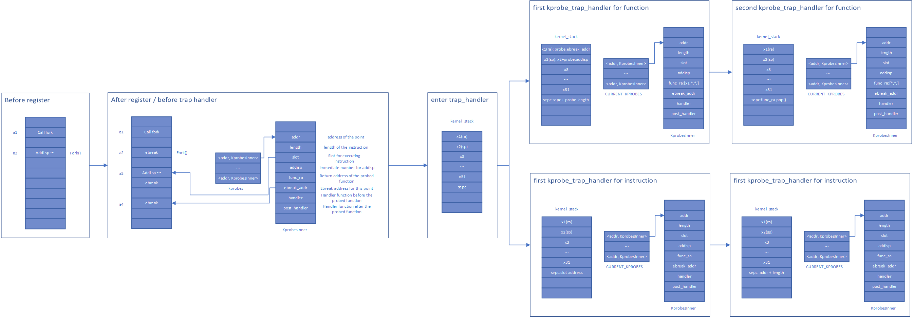
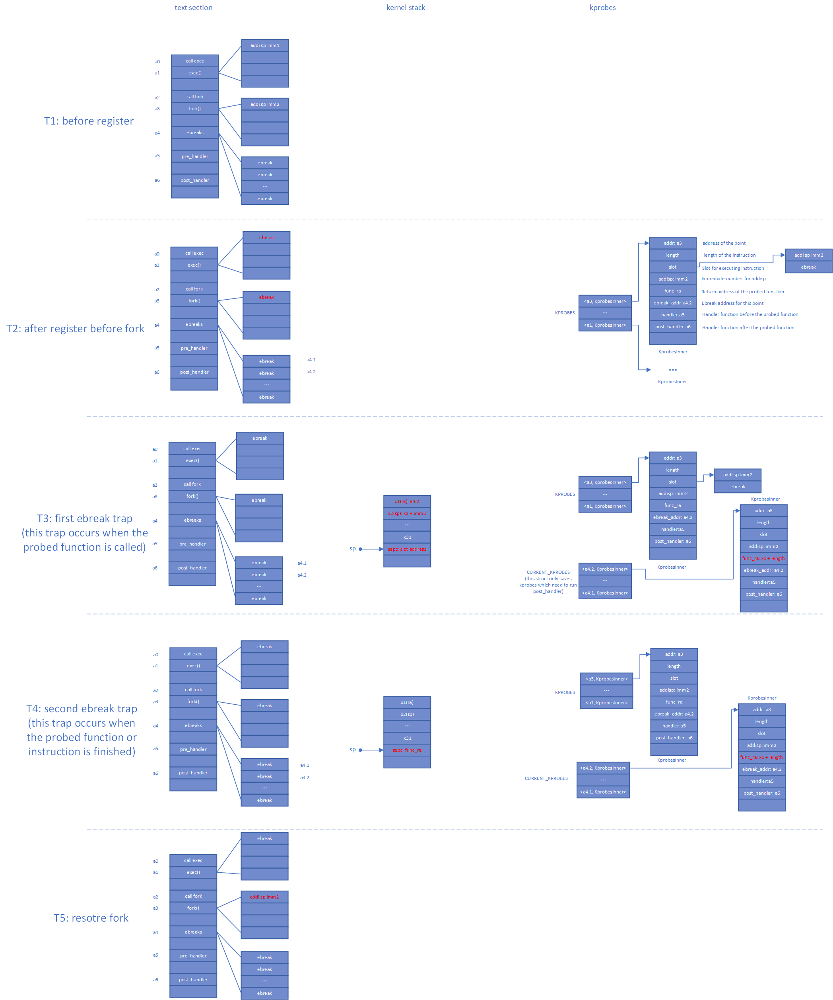

proj145技术报告
目标
ebpf in rust 目前有五个主要目标
-
完成内核空间指令的动态插桩，对内核函数/合法指令进行跟踪。
-
完成用户空间指令的动态插桩，对用户态程序中的函数/合法指令进行跟踪。
-
function parameter probing in probes。
完成probes对函数参数的获取
-
async in probes
完成probes对rust async 函数的跟踪支持。
-
ebpf
根据ebpf原理实现一个简单的ebpf。
Linux中的kprobes与uprobes
kprobes
开发人员在内核或者模块的调试过程中，往往会需要要知道其中的一些函数有无被调用、何时被调用、执行是否正确以及函数的入参和返回值是什么等等。比较简单的做法是在内核代码对应的函数中添加日志打印信息，但这种方式往往需要重新编译内核或模块，重新启动设备之类的，操作较为复杂甚至可能会破坏原有的代码执行过程。
而利用kprobes技术，用户可以定义自己的回调函数，然后在内核或者模块中几乎所有的函数中（有些函数是不可探测的，例如kprobes自身的相关实现函数，后文会有详细说明）动态的插入探测点，当内核执行流程执行到指定的探测函数时，会调用该回调函数，用户即可收集所需的信息了，同时内核最后还会回到原本的正常执行流程。如果用户已经收集足够的信息，不再需要继续探测，则同样可以动态地移除探测点。因此kprobes技术具有对内核执行流程影响小和操作方便的优点。
uprobes
uprobes 是Linux提供用户态的动态探针，合并于2012年7月发布的 Linux 3.5 内核中。uprobes 和 kprobes 十分相似，只不过用在用户态而已。 uprobes 可以检测到用户态函数入口和出口的位置。uprobes 工作原理和 kprobes 差不多，它会在目标位置插入一个断点，这样当程序执行流执行到这个地方会去执行我们设置的 uprobe handle。当我们不再不需探测和收集信息时候，可以移除断点恢复原状。
Rust 异步并发
简介
在当前的 rust 生态中，我们可以使用async/await来将异步函数按照同步函数的格式一样书写，使代码更加整洁，易于维护。
Future并发模式
Future异步并发模式是以代理模式和异步开发的混合产物，future是对将来的一种代理凭证，凭借这个凭证可以异步地在未来某个时刻得到确定的结果。
Rust对Future异步并发模式做了一个完整的抽象，包含在第三方库future-rs中。该抽象主要包三个部件：
- Future： 基本的异步计算抽象单元
- Executor：异步计算调度层
- Task：异步计算执行层
Future
在Rust中Future是一个trait，其源代码为：
#![allow(unused)] fn main() { pub trait Future{ type Output; fn poll(self: Pin<&mut self>, lw: &LocalWaker) -> Poll<Self::Output>; } }
其中poll方法是Future的核心，它是对轮询行为的一种抽象。在Rust中，每个Future都需要使用poll方法来轮询所要计算值的状态。该方法返回的Poll是一个枚举类型：
#![allow(unused)] fn main() { pub enum Poll<T>{ Ready(T), Pending, } }
Poll<T>枚举类型是对准备好和未完成两种状态的同意抽象，以此来表达Future的结果。
Executor与Task
在实际的异步开发中，需要一个专门的调度器来对具体的任务进行管理统筹，这个调度器就是Executor，具体的异步任务就是Task。
async/await
async：产生一个 Future 对象，一个没有任何作用的对象，必须由调用器调用才会有用。 await: 等待异步操作完成（基于语义理解，其实很多情况只有调用 future.await 才是事实上去调用，具体是不是之前就开始执行，这个要看我们的调用器是什么），这步是阻塞当前线程，这个语法属于 Future 对象才能调用，而且必须要在 async 函数内。
具体实现原理（仍在继续理解调查中）
async块会生成一个Generator<Yield=()>的生成器，然后将该生成器通过单元结构体GenFuture进行包装，最后为该GenFuture实现Future
await!展开的代码会在loop循环中进行判断，如果是Ready则退出。
Linux中的eBPF（仍需继续了解）
简介
eBPF 源于 BPF，本质上是处于内核中的一个高效与灵活的虚类虚拟机组件，以一种安全的方式在许多内核 hook 点执行字节码。BPF 最初的目的是用于高效网络报文过滤，经过重新设计，eBPF 不再局限于网络协议栈，已经成为内核顶级的子系统，演进为一个通用执行引擎。开发者可基于 eBPF 开发性能分析工具、软件定义网络、安全等诸多场景。
kprobes
设计思路
函数跟踪
-
注册阶段
- 根据传入的地址，解析指令，获取sp的变化值，与
handler，post_handler等一起存入kprobes数据结构中. - 将当前地址的指令改为
ebreak.
- 根据传入的地址，解析指令，获取sp的变化值，与
-
中断处理阶段
根据中断地址判断当前属于哪个
kprobe,并判断其属于哪一次中断.- 第一次中断
- 执行
handler. - 保存跟踪函数的返回值，并将其改为ebreak的地址.
- 根据解析出的sp值，对堆栈指针进行操作.
- 返回到中断指令的下一条指令.
- 执行
- 第二次中断
- 执行
post_handler. - 将中断的返回地址改为之前保存的返回值.
- 执行
- 第一次中断
指令跟踪
-
注册阶段
- 根据传入的地址，解析指令，判断是否合法(合法的判断条件同Linux的规则)，将
handler，post_handler等一起存入kprobes数据结构中. - 如果合法，将当前地址的指令存放到一片已经开辟了的内存空间中，并在指令后添加ebreak指令.
- 根据传入的地址，解析指令，判断是否合法(合法的判断条件同Linux的规则)，将
-
中断处理阶段
根据中断地址判断当前属于哪个
kprobe,并判断其属于哪一次中断.- 第一次中断
- 执行
handler. - 返回到注册阶段开辟出来的地址上.
- 执行
- 第二次中断
- 执行
post_handler. - 将中断返回地址改为原地址的下一条指令的地址.
- 执行
- 第一次中断
数据结构
- addr： 跟踪的地址
- length： 指令长度
- **slot：**指令插槽值
- **addisp：**栈指针偏移
- **func_ra：**返回值地址
- **func_ebreak_addr：**函数中断地址
- **insn_ebreak_addr：**指令中断地址
- **handler：**跟踪前回调函数
- **post_handler：**跟踪后回调函数
- **probe_type：**探测类型
流程图
流程图数据结构版
流程图堆栈版

Uprobes
设计思路
函数跟踪
-
注册阶段
- 根据传入的地址与探测的用户程序路径，解析指令，获取sp的变化值，与
handler，post_handler等一起存入uprobes数据结构中. - 将当前地址改为可写并修改指令为
ebreak.
- 根据传入的地址与探测的用户程序路径，解析指令，获取sp的变化值，与
-
中断处理阶段
根据中断地址与进程inode判断当前属于哪个
uprobe,并判断其属于哪一次中断.剩下同kprobes处理办法.- 第一次中断
- 执行
handler. - 保存跟踪函数的返回值，并将其改为ebreak的地址.
- 根据解析出的sp值，对堆栈指针进行操作.
- 返回到中断指令的下一条指令.
- 执行
- 第二次中断
- 执行
post_handler. - 将中断的返回地址改为之前保存的返回值.
- 执行
- 第一次中断
指令跟踪
-
注册阶段
- 根据传入的地址，解析指令，判断是否合法(合法的判断条件同Linux的规则)，将
handler，post_handler等一起存入kprobes数据结构中. - 如果合法，开辟一块可读可写可执行的用户态空间，将当前地址的指令存放到开辟了的用户态空间中，并在指令后添加ebreak指令.
- 根据传入的地址，解析指令，判断是否合法(合法的判断条件同Linux的规则)，将
-
中断处理阶段
根据中断地址与用户态进程的路径判断当前属于哪个
uprobe,并判断其属于哪一次中断.剩下同kprobes处理办法.- 第一次中断
- 执行
handler. - 返回到注册阶段开辟出来的地址上.
- 执行
- 第二次中断
- 执行
post_handler. - 将中断返回地址改为原地址的下一条指令的地址.
- 执行
- 第一次中断
执行阶段
获取即将运行的用户态进程，将该进程上已经注册的跟踪点进行操作，添加ebreak等
数据结构
- addr： 跟踪的地址
- length： 指令长度
- **slot_addr：**用户态插槽的地址
- **addisp：**栈指针偏移
- **func_ra：**返回值地址
- **func_ebreak_addr：**函数中断地址
- **insn_ebreak_addr：**指令中断地址
- **handler：**跟踪前回调函数
- **post_handler：**跟踪后回调函数
- **probe_type：**探测类型
流程
流程基本同kprobes
异步函数的动态跟踪
设计思路（初步想法）
- 跟踪poll的第一次入与出
eBPF
新建文件夹
内核及用户态动态跟踪程序
内核跟踪库 rkprobes lib
可以在kprobes的系统设计一节看到关于kprobes的实现原理.
如果单独使用kprobes，kprobes可以单独成为一个lib，方便所有操作系统调用.
lib: github仓库.
使用说明
APIs
#![allow(unused)] fn main() { // register a kprobe, need the address of the function or instruction, two handler functions and the type you want to probe pub fn kprobe_register( addr: usize, handler: Arc<Mutex<dyn FnMut(&mut TrapFrame) + Send>>, post_handler: Option<Arc<Mutex<dyn FnMut(&mut TrapFrame) + Send>>>, probe_type: ProbeType ) -> isize ; //unregister address-related probe pub fn kprobe_unregister(addr: usize) -> isize; //trap handler for handler kprobes pub fn kprobes_trap_handler(cx: &mut TrapFrame); }
方法
-
讲
kprobes_trap_handler放到OS的中断处理程序中.例如：#![allow(unused)] fn main() { pub fn trap_handler_no_frame(tf: &mut TrapFrame) { let scause = scause::read(); match scause.cause() { Trap::Exception(E::Breakpoint) => rkprobes::kprobes_trap_handler(tf), //add here } } } -
准备
handler和post_handler,handler在函数或指令之前执行的跟踪函数，post_hanlder在函数或指令执行之后运行的跟踪函数.handler是必须的,post_handler是可选择的,这两个函数的输入值是一个包含所有寄存器的结构体，使用的是TrapFrame的结构体.#![allow(unused)] fn main() { pub fn example_pre_handler(cx: &mut TrapFrame){ println!{"pre_handler: spec:{:#x}", cx.sepc}; } pub fn example_post_handler(cx: &mut TrapFrame){ println!{"post_handler: spec:{:#x}", cx.sepc}; } } -
为了注册一个
kprobe, 你需要传递函数或指令的地址 , 自己写好的handler和post_handler(可选), 跟踪的方式(函数或者指令).#![allow(unused)] fn main() { pub enum ProbeType{ Insn, Func, } rkprobes::kprobe_register( self.addr, alloc::sync::Arc::new(Mutex::new(move |cx: &mut TrapFrame| { example_pre_handler(cx); })), Some(alloc::sync::Arc::new(Mutex::new(move |cx: &mut TrapFrame| { example_post_handler(cx); }))), ProbeType::Insn, ) } -
为了注销一个
kprobe, 你只需要传递跟踪点的地址.#![allow(unused)] fn main() { rkprobes::kprobe_unregister(addr) }
rCore中内核及用户态跟踪程序
kprobes
kprobes的操作与rkprobes使用一致.
为了方便后续可以跟踪异步函数，probe_type结构体进行了一次更新.
#![allow(unused)] fn main() { pub enum ProbeType { Insn, SyncFunc, AsyncFunc, } }
uprobes
在注册阶段需要额外传入需要跟踪的用户态进程的路径,其余参数与kprobes一样.
#![allow(unused)] fn main() { fn register_uprobes( &self, path: String, addr: usize, handler: Arc<Mutex<dyn FnMut(&mut UserContext) + Send>>, post_handler: Option<Arc<Mutex<dyn FnMut(&mut UserContext) + Send>>>, probe_type: ProbeType ) -> isize; }
中断处理函数需要传入另一个存储寄存器的结构体
#![allow(unused)] fn main() { fn uprobes_trap_handler(&self, cx: &mut UserContext); }
针对每一个用户态进程，需要在进入时初始化当前进程注册过的跟踪点
#![allow(unused)] fn main() { fn uprobes_init(&self) }
使用说明
如果需要使用uprobes，你需要：
- 注册uprobes.
- 将uprobes中断处理函数放到内核处理用户态发生的中断的函数中去.
- 在sys_exec中加入初始化函数
uprobes_init.
开发日志
5.31
完成初赛技术报告.
5.29
完成完整的uprobes功能，可以动态跟踪任意用户进程.
5.15
完成部分uprobes功能，可以动态跟踪当前用户进程的函数或指令.
1.31
完成kprobes相关功能的实现，内核相关程序可以动态进行插桩.